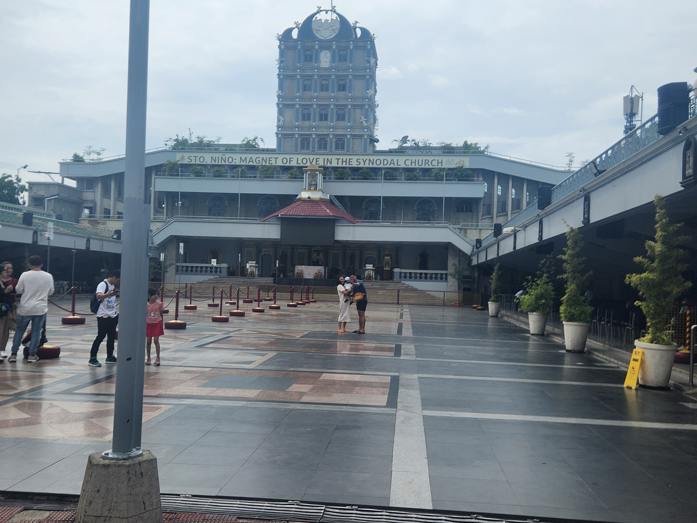
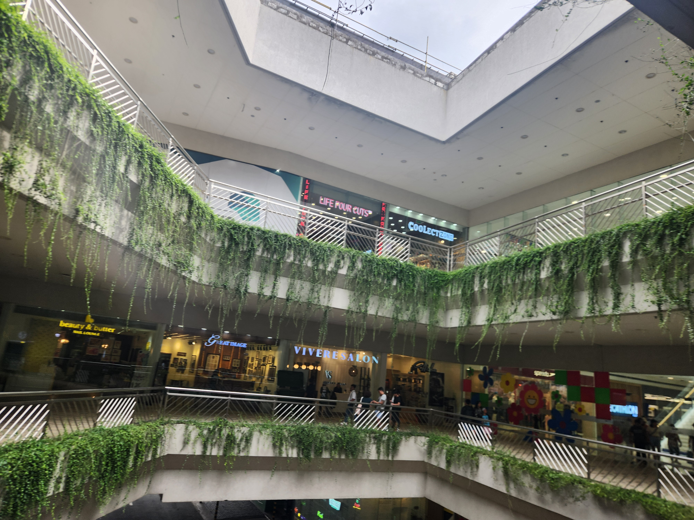

So, a lot has happened ever since I took web design from my sophomore year. At the end of my junior year, I knew that Javascript was going to be a huge weakness of mine. Even if everything else was going well, Javascript was going to be a pain. Even this program doesn't have javascript. But before I could get to that, I had to get experience with java. Java would hopefully get more knowledge of JS due to them being very similar. I'm hoping to at the very least be able to get a good understanding of Javascript, due to the fact there is so much to it, it's hard enough be able to learn everything about it and every small detail. thats why I'm hoping to get a good understanding of it here before I head off to college.
Vacation
I went to the Philipines!
The first picture was in the Bonifacio District within Cebu, a beautiful city with a great nightlife. The second place was at the Sto.Nino Church also located in Cebu. The last picture was within the SM Mall of Asia, the largest mall in the entirety of Asia, also the picture taken was within the outside part of the mall. So I visited many places within the Philipines. Went to Palawan and Cebu to do a lot of exploring, Manila to visit the city and the malls, Tagaytay to explore the moutains(even through our car almost fell down the moutain). But still, it was a fun time to explore, eat, and just see the place I always wanted to go to.


New Experiences
Well here's a song I wrote, titled Atlantic Nights:
One of the main things I have explored throughout the summer was music, how it's made, and how I can create my own pieces. This piece was one of the more recent ones that I have tweaked over the summer and submitted it through TSA. I'm starting to gain a passion for music creation as a means to just have fun. Going into my senior year annd possibly to college, I needed to gain another hobby in case if I ever feel boredom.